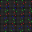

What exactly is a favicon?
A favicon is a file containing one or more small icons associated with a particular website or web page. It is known as a website icon, tab icon, shortcut icon, URL icon, or bookmark icon. A favicon is used to show a graphical representation of the site being visited at the left side of the browser's address bar. A favicon is is a type of web design, an icon associated with a particular website. It is typically displayed in the address bar of a browser viewing the site.
How are favicons created?
A favicon is a web design so you must first create an image. You can create your image using an editor. Then, it is necessary to convert the favicon image into a file. To convert your file you may need to use an online tool. When uploading your image you need to select an icon size. Then you must download the new file. Afterwards you need to upload the image to your website and add basic HTML code.
How did I create the favicon for this site?
I used Studio Code Pixelation to create the favicon image for this site. I created a Pixelation image than converted the image into a file. Then, I uploaded the image to my website using HTML code.
What does your icon looks like, in binary and/or hexadecimal?
The icon I used to create the favicon in this page was: 10010 10100010101010101 111000010010 0000110101001 0110 011010110001011 1000100010111010101000 0111111111000001111110 1010000111111010101010 101101010111 1111010100010101010101 111000010010 0110 0010 0000 0001 0110 0100100111000000101011 1000100010111010101000 011100111000001111110 1010000111111010101010 101101010111 1111010100010101010101 111000010010 0000 0010 0000 0001 0110111111111000000101011 100010110110010111010101000 0111111111000001111110 1010000111111010101010 10110101 1111010100010101010101 111000010010 00110 0001110101 11111000000101011 1000100010111010101000 01001010101111000001111110 10100001100101111010101010 101010001010 1110100101